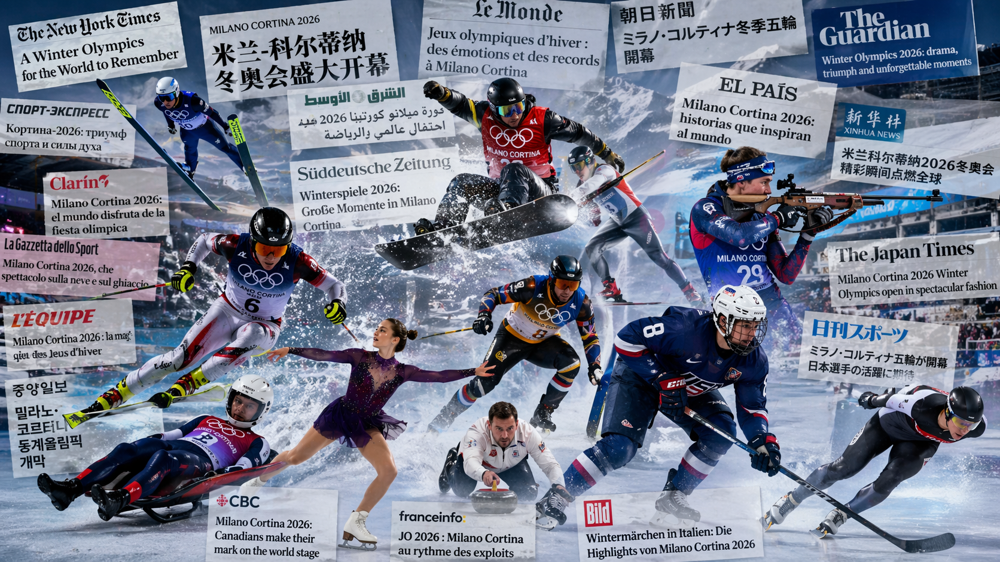

Medals, Not Scandals: How Countries Framed the 2026 Winter Olympics
When the world watches the Olympics, it feels like a shared experience. The same races, the same podiums, the same moments of triumph and heartbreak. But the stories people read about those moments are far from uniform.